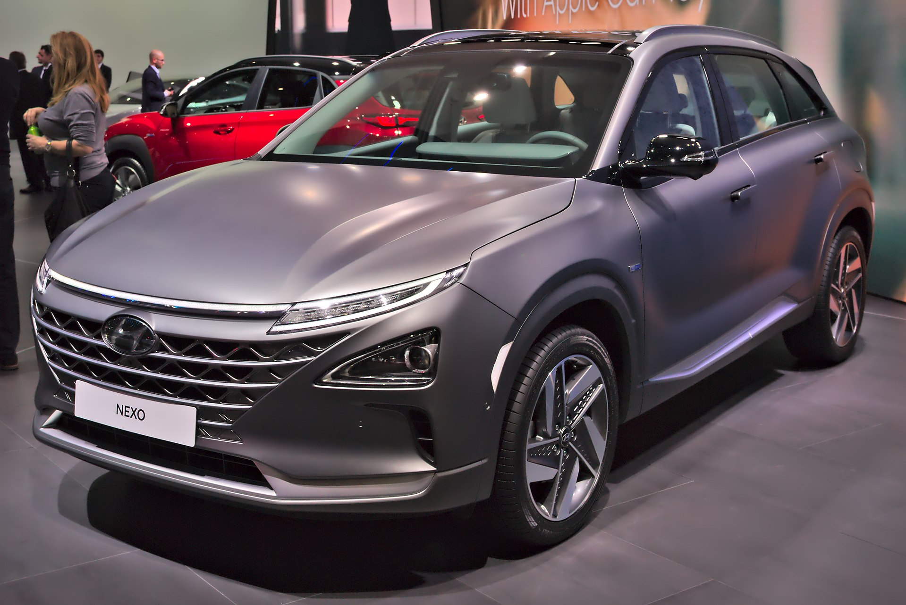

수소자동차(hydrogen vehicle, hydrogen fueled car)는 동력의 연료로써 수소를 사용하는 차량이다.

수소 자동차는 수소 차량에 속하며, 수소 차량의 경우 자동차 및 기타 운송차량 외에도 수소 연료 우주발사체를 포함한다. 이러한 차량의 발전 장치는 전동기 구동을 위해 내연기관의 수소를 태우거나(수소내연기관자동차) 연료전지 내에서 수소를 산소와 반응시켜 수소의 화학 에너지를 역학적 에너지로 변환한다. 운송 연료 공급을 위해 수소를 널리 사용하는 것은 제안된 수소 경제의 필수 요소이다.